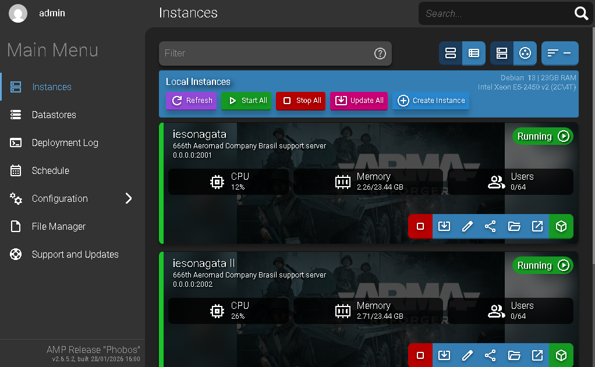
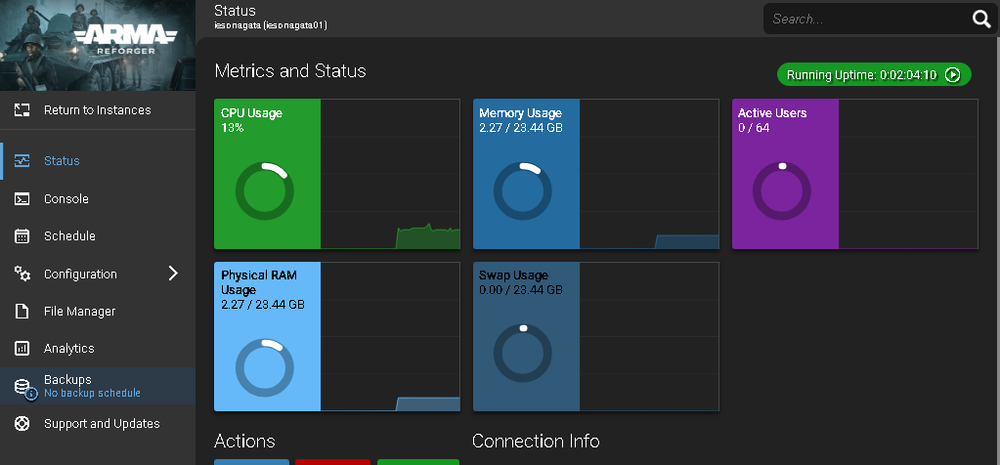

O AMP (Application Management Panel) é a evolução do famoso McMyAdmin, desenvolvido pela CubeCoders. Diferente de outros painéis pesados, o AMP foi projetado para ser modular, seguro e extremamente eficiente em termos de consumo de recursos.
Se você gerencia servidores de Minecraft, Rust, Valheim, ARK ou dezenas de outros títulos, o AMP oferece uma interface web intuitiva que facilita a vida tanto de administradores iniciantes quanto dos mais experientes.
Principais Funções e Recursos
- Instalação Simplificada: Com scripts de comando único, você configura o painel rapidamente em sistemas Windows ou Linux.
- Gestão de Instâncias: Crie e gerencie múltiplos servidores de jogos diferentes a partir de uma única interface centralizada.
- Agendador de Tarefas Integrado: Automatize backups, reinicializações e atualizações de servidores sem precisar mexer em códigos complexos.
- Gerenciador de Arquivos via Web e SFTP: Edite arquivos de configuração diretamente no navegador ou utilize seu cliente SFTP favorito para uploads rápidos.
- Suporte a Mobile (PWA): Gerencie seus servidores de qualquer lugar através do celular, graças à tecnologia de Progressive Web App.
- Segurança Avançada: Suporte nativo para autenticação de dois fatores (2FA) e Single Sign-On (SSO) via OIDC.
- Monitoramento e Analytics: Acompanhe o status do servidor, uso de recursos e estatísticas de jogadores em tempo real.

Por que escolher o AMP?
Diferente de painéis gratuitos ou legados, o AMP da CubeCoders foca na performance pura e na facilidade de uso. Ele elimina a necessidade de editar manualmente arquivos de texto e gerenciar firewalls, automatizando grande parte do trabalho técnico pesado.
Para quem busca profissionalismo e estabilidade, o AMP oferece diferentes níveis de licenças (Standard, Professional e Advanced) que cabem no bolso de pequenos grupos de amigos ou grandes comunidades de jogos

Agradecimentos a #MetalBina e #ARCANJO , participantes do canal do Whatsapp da 666th Aeromad Company Brasil pelos primeiros PIX enviados que auxiliam nas contas da aquisição do CubeCoders e energia do server !